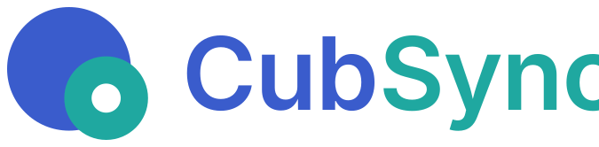

一个引擎，多种后端
在你的设备之间同步文件夹 —— 走过自己的局域网，Android、桌面、无头守护进程共用同一套代码，同一份界面规格。
Cross-platform file sync — one engine, many backends.
双向 / 镜像 / 仅更新
内容哈希比对
断点续传
Apache-2.0

在你的设备之间同步文件夹 —— 走过自己的局域网，Android、桌面、无头守护进程共用同一套代码，同一份界面规格。
Cross-platform file sync — one engine, many backends.